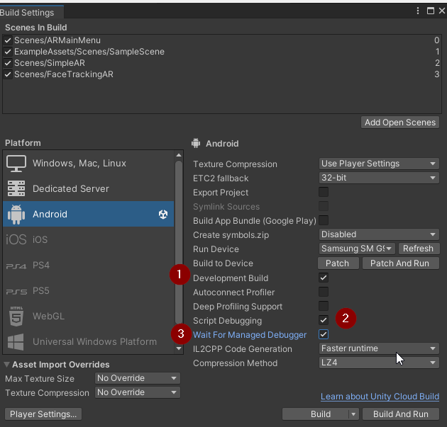
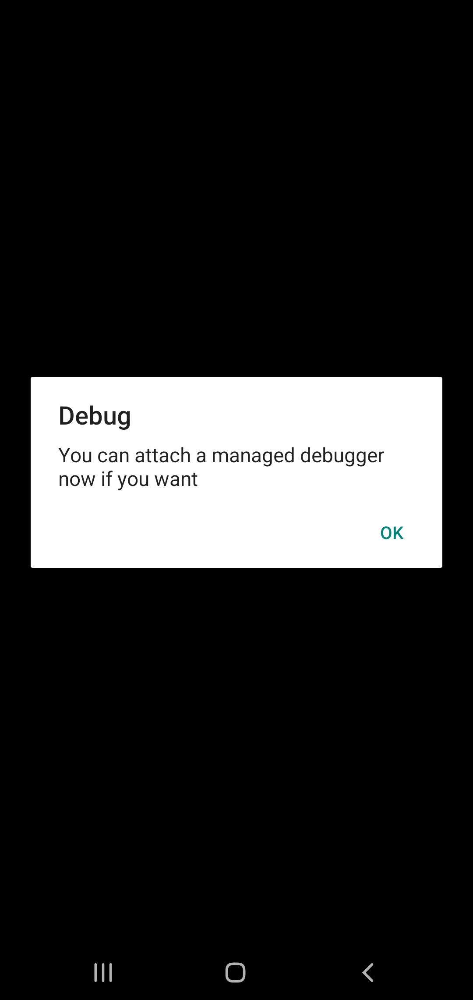
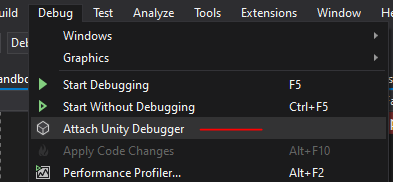
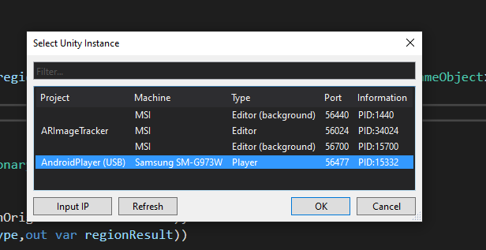

Unity Debugger for AndroidSep 23, 2023Quick explanation on how to attach Unity Debugger so you can put breakpoints in Visual Studio while playing an android game. Go to build settings > Switch to Android Platform > Enable Development Builds > Enable Script Debugging > Enable Wait For Managed Debugger

Press build. If this is your first time building this way, it can take a while. Once it's built, sideload to your app. Open the app and you will see a message "You can attach a managed debugger now if you want"

Go into Visual Studios > Debug > Attach Unity Debugger

An window will open and it should display your phone. Select it and press ok. In your app, press ok and play the app, your breakpoints should be getting hit!

Recent blogsSee all blogs